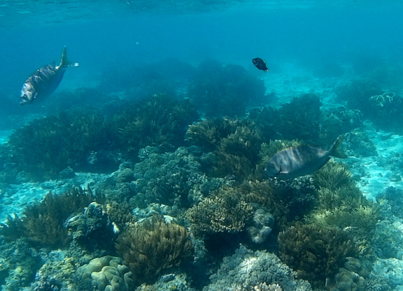
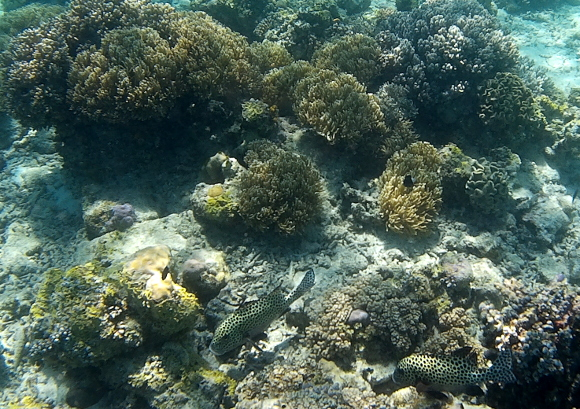
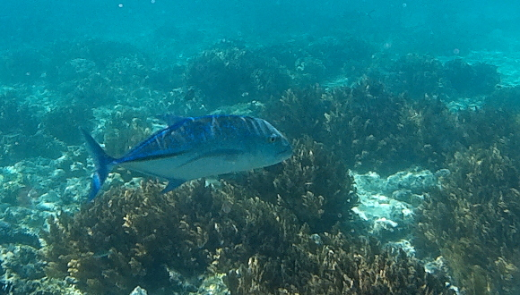
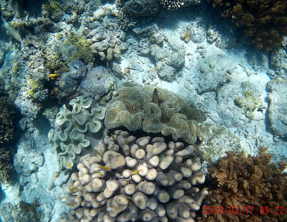
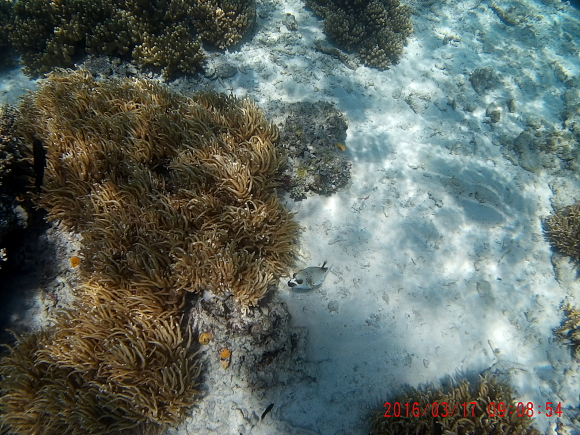
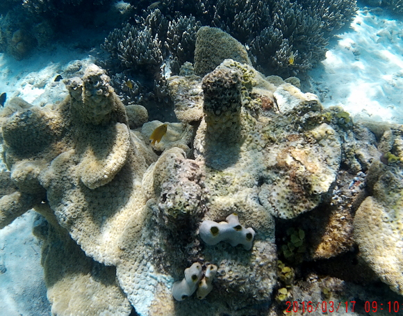

-------------------------------------------
On the second day, the plan was to dive (I was the only snorkeler) around the resort island of Kapalai, then two more spots between it and Mabul Island.
-------------------------------------------
| Found out that other dive outfits have day trips to Sipadan. Checked on several, but next available date is too far off, so will be content to just visit as many other spots as possible. |  |
| Seems most fish are camera shy. These two let me get a little closer. |  |
| Probably in the Tuna family, so was surprised to see this 30" specimen in rather shallow water. |  |
| Soft corals and tiny yellow fish. |  |
| A puffer enjoys the soft corals. |  |
| More unusual coral, and possibly an organism related to the heart ascidians. Note: All photos taken with SJ Cam in underwater housing using natural lighting, while snorkeling. |  |
Babu Bill
Question? Contact me at the Juno.com address Dancer2SEAsia.
Have a nice day!

Special Topics:
| |||||